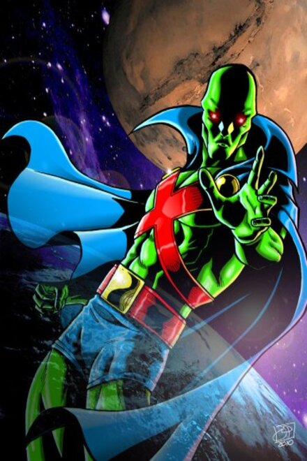

O Caçador de Marte tem uma galeria de poderes incrivelmente variada que o torna extremamente poderoso; Ele possui super-força, super-velocidade e invulnerabilidade, além de poder voar, mutar sua aparência e ser telepata.
Poderes. Barbara é uma grande hacker, de longe é a mais instruída com computadores e tecnologia da bat-família. Ela também tem um intelecto genial, o que a ajuda em suas habilidades de investigação.
Poderes e habilidades: Superman tem diversos poderes sobre-humanos: pode voar, tem força descomunal, visão de raio-x, visão de calor, supersopro, superaudição e invunerabilidade.
Poderes. Cada Lanterna Verde detém um anel de poder que pode gerar uma variedade de efeitos, sustentando-se apenas pela imaginação do portador do anel e pela sua força de vontade. ... Ao longo dos anos, os anéis foram mostrados capazes de realizar quase qualquer coisa dentro da imaginação do portador do anel.
Poderes e habilidades: Aquaman pode respirar embaixo da água, pode nadar a velocidades altíssimas, tem grande durabilidade devido a ter que suportar as altas pressões do fundo dos oceanos, tem força sobre-humana e é dono de um poder telepático que o permite se comunicar com as formas de vida marinhas, que obedecem a seus pedidos e ordens.
Ao contrário da maior parte dos super-heróis, Batman não tem superpoderes; assim na sua guerra contra o crime faz uso do seu intelecto de gênio, da sua perícia em artes marciais e destreza física, bem como a sua enorme riqueza que lhe permite obter um enorme arsenal de armas e outros equipamentos.
Também chamado de velocista escarlate, o Flash possui "super-velocidade", consegue mover-se a uma velocidade sobre-humana, usar reflexos sobre-humanos e violar certas Leis da física, podendo até mesmo ultrapassar a velocidade da luz.
Sua habilidade de voar vem do metal enésimo presente em seu cinto que anula o poder da gravidade. Suas asas foram criadas para dar estabilidade ao voo e ela possui a habilidade de falar com pássaros e uma visão perfeita. Sua arma preferida é uma clava. O longo contato com este metal alienígena a tornou muito forte e resistente, isso combinado com suas habilidades de luta a tornam uma super-heroína!
Entre eles estão: super-força, super-durabilidade, super-velocidade, voo, super-reflexos e super-resistência. São graças a eles que a guerreira pode enfrentar o Superman quase de igual para igual. Muita gente não sabe, mas a super-heroína é vegetariana.
Grande Líder. Embora seja mais conhecido por ser o parceiro-mirim do Batman, Robin foi treinado por ele e assim como o Batman se destaca por ser o estrategista da Liga, Robin também sempre se destacou entre os ajudantes pelas mesmas características de seu mentor.